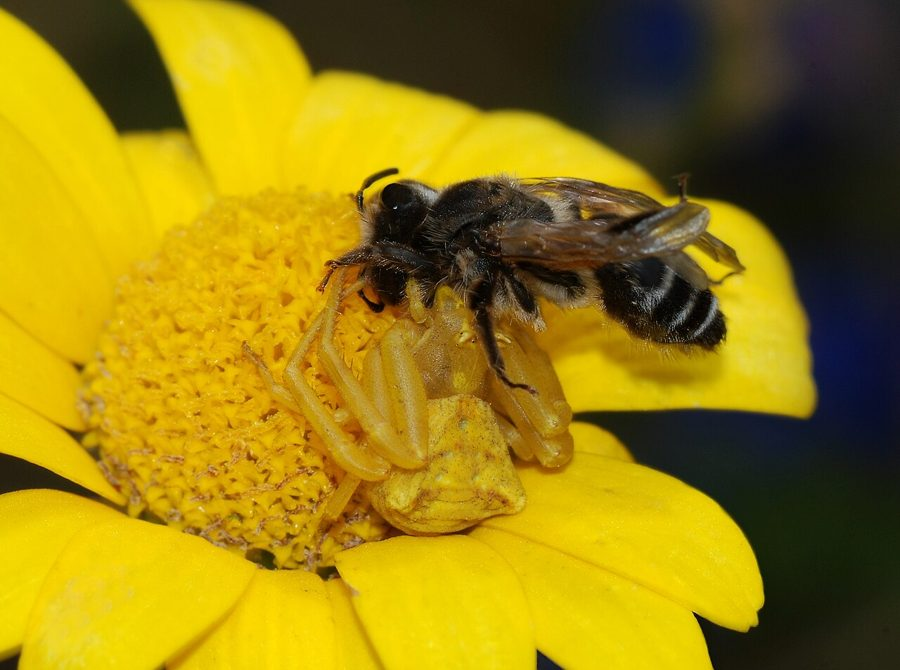

फूल मकड़ीFlower Crab Spider
Thomisus · Thomisidae · SPD-0020

- Scientific name
- Thomisus Walckenaer, 1805
- Family
- Thomisidae
- Hindi
- फूल मकड़ी
- Local names
- fool makdi, phool makdi, crab spider
- Status here
- native
- Movement
- Resident, here all year
- IUCN
- not evaluated
- Review
- audited and independently read
When to look कब देखें
Present all year.
Uses and possibilities उपयोग और संभावनाएँ
Drawn from the documented uses in the profile below, where each is labelled traditional, current or a research lead. All uses →
फूल मकड़ी / Flower Crab Spider
Thomisus Walckenaer, 1805 — Thomisidae
फूल मकड़ी (genus Thomisus) — यह एक छोटी, सपाट शरीर वाली मकड़ी है जो फूलों के पास बैठती है। इसका नाम "crab" इसलिए पड़ा क्योंकि यह अपने बड़े सामने के पैरों को केकड़े की तरह फैलाकर रखती है। इसका रंग फूल जैसा ही होता है — सफ़ेद, पीला, गुलाबी, या हरा — जिससे यह पूरी तरह छिपी रहती है। जब कोई कीट (मधुमक्खी, तितली, हरी मक्खी) फूल पर आता है, तो यह बिजली की रफ़्तार से इसे पकड़ लेती है। यह सबसे चतुर शिकारी है और जाला बनाती ही नहीं, बस घात लगाती है।
Quick Identification त्वरित पहचान
| Feature | Description |
|---|---|
| Size | Small to medium spider; body length 6–10 mm (females often larger) |
| Colour | Highly variable: white, yellow, pink, red, or green; matches flower colour |
| Body shape | Flattened, crab-like; compact and squat |
| Legs | First two pairs are much longer and held out to the sides; last two pairs shorter and directed backward |
| Eyes | Eight eyes; vision is adequate but not exceptional |
| No web | Ambush predator; does not spin a web |
Field tip: Scan flowering plants, especially open flowers like marigolds, hibiscus, and white flowers. Look for a small, flat spider matching the flower colour, with two long front legs held out to the sides. Do not be deceived by its smallness or stillness — it strikes with remarkable speed when prey approaches. The camouflage is often so complete that you may find the spider only when an insect is captured.
हिंदी — कैसे पहचानें: फूल पर सपाट, रंगीन मकड़ी, आगे के दो पैर लंबे और फैले हुए, घात लगाने वाली।
Morphology आकारिकी
Biometrics (typical for genus):
| Measurement | Range |
|---|---|
| Body length (females) | 7–12 mm |
| Body length (males) | 5–7 mm |
| Leg spread (females) | 15–25 mm |
Structure: Flattened, squat body shape characteristic of the family Thomisidae. The carapace is broad, covering a compact prosoma (head region). Eyes are relatively small, arranged in two rows of four. The most distinctive feature is leg placement: the first and second pairs of legs are much longer, directed laterally and slightly forward, and equipped with numerous spines and setae for gripping prey. The third and fourth pairs are shorter and directed posteriorly. Colouration is highly variable, from pure white to bright yellow, pink, red, or green, and may include stripes, bands, or spots that enhance camouflage on specific flowers.
Sexual dimorphism: Females are significantly larger, with broader abdomens. Males are smaller, more elongate, and often paler. Males have well-developed pedipalps.
Behaviour & Ecology व्यवहार और पारिस्थितिकी
Master ambush predators of flower-visiting insects. Thomisus spiders position themselves on flowers that attract pollinators and other insects. They remain motionless for extended periods, relying on camouflage and the unsuspecting approach of prey. When an insect (bee, fly, butterfly, wasp) lands on the flower, the spider strikes with explosive speed, using its powerful front legs to grasp and hold the prey. The venom rapidly paralyzes the victim, and the spider feeds while holding the insect.
This hunting strategy is highly efficient: some studies show that flower crab spiders can capture 5–20 insects per day, with bees being common prey. The flower provides both ambush site and camouflage in a single location.
हिंदी: घात मारने वाली है, जाला नहीं बनाती। फूल से मेल खाने के रंग में छिपी रहती है। कीट आता है, तुरंत पकड़ लेती है।
Life Cycle / Phenology जीवन चक्र
| Stage | Event |
|---|---|
| Egg | Laid in a silken cocoon; females guard the cocoon |
| Spiderling | Hatch within the cocoon and remain for several days |
| Juveniles | Multiple moults; development 2–4 months depending on season |
| Adult | Females live ~1–2 years; males shorter-lived (~6–12 months) |
| Reproduction | Peak mating March–June and September–October in eastern UP |
Host Plants or Prey आहार
Prey (preferred):
- Honey bees (Apis cerana and Apis mellifera)
- Flies of various types
- Small butterflies and skippers
- Small wasps
- Ants and small bugs
Hunting strategy: The spider selects flowers that attract the most insects — open flowers with abundant nectar and pollen. By choosing high-traffic flowers, the spider maximizes prey encounter rate.
Predators / Natural Enemies शत्रु
- Parasitoid wasps: Parasitoid wasps parasitize spider eggs.
- Predatory wasps: Large wasps (Pompilidae) hunt adult spiders.
- Vertebrate predators: Lizards, insectivorous birds, and shrews hunt spiders.
Agricultural / Human Relevance कृषि प्रासंगिकता
Natural pest control and pollinator predation (dual relevance). Thomisus species hunt various arthropods on flowers, including crop pests such as leaf hoppers, small flies, and occasional pest caterpillars. In this role, they provide pest regulation. However, because they prey upon pollinators (especially bees), they may have a negative impact on pollination and fruit set in crops that depend on insect pollination.
The overall impact is complex: in some systems, pest reduction outweighs pollinator loss, while in others the opposite is true. Integrated pest management strategies must account for this dual role.
No threat to humans: Flower crab spiders are harmless to humans. Bites are extremely rare, occurring only if the spider is strongly provoked. If bites occur, they cause minimal local irritation, similar to a mosquito bite, with no systemic effects.
हिंदी: किसान के लिए अच्छी है क्योंकि यह हानिकारक कीड़े खाती है। पर यह मधुमक्खियों को भी खा जाती है, जो परागकण ले जाती हैं। दोनों का संतुलन ज़रूरी है।
Expected Locally स्थानीय रूप से अपेक्षित
Not a field record. Written from published accounts for eastern Uttar Pradesh. No confirmed local sighting yet — if you have seen it, that is what the atlas needs.
अभी तक स्थानीय पुष्टि नहीं। यह विवरण प्रकाशित स्रोतों से है, किसी अवलोकन से नहीं।
Expected on flowering plants throughout Basti district, particularly during spring (March–April) and post-monsoon (September–October) when flowers are abundant. Marigolds, hibiscus, white flowers, and mustard are excellent places to search. A record would be a photograph or specimen collected from a specific flower species, with place and date.
Distribution वितरण
Global range: Thomisus is a genus widespread across the Old World, from Africa through Asia and into Australia.
In India: Distributed throughout the subcontinent in flowering habitats.
In Uttar Pradesh: Present in gardens, orchards, and cultivated areas.
In Basti district / eastern UP: Expected in all areas with flowering plants.
Research Questions शोध प्रश्न
- What flower species in local gardens and crops attract the most flower crab spiders? / स्थानीय बागों और खेतों में कौन से फूलों पर सबसे ज़्यादा फूल मकड़ियाँ होती हैं? — Survey flowers and count spiders on each species.
- How many bees and other insects does a single flower crab spider consume per day during peak flowering? — Observe and count captures over a 12-hour period.
- Does the presence of flower crab spiders reduce fruit/seed set in insect-pollinated crops? — Compare yields in plots with and without spiders (experimental manipulation).
- What flower colours attract the most flower crab spiders, and does this vary by species? — Offer artificial flowers of different colours and count colonization.
- Can farmers distinguish flower crab spider egg cocoons and protect them to increase spider populations for pest control? — Training and field trials with farmers.
Similar Species मिलती-जुलती प्रजातियाँ
| Species | How to tell apart | हिंदी |
|---|---|---|
| Other Thomisus species | Very similar; specific ID requires microscopy; ecological roles identical | बहुत मिलता-जुलता |
| Other Thomisidae (e.g., Oxytate) | Similar crab-like shape; may have different proportions; found on different plants | अलग आकृति |
| Green lynx spider (Oxyopidae) | Larger; cylindrical body, not flattened; very prominent eye tubercle; long spines on legs | हरा, बड़ा, लंबे कांटे |
Field rule: Small, flattened spider matching the flower colour, with long front legs held to the sides, motionless on flowers: Flower Crab Spider (Thomisus genus).
Taxonomy & Classification वर्गीकरण
Original description. This is a genus-level profile, so no single species description applies; the genus Thomisus was established by Walckenaer in 1805 (Tableau des aranéides) and is the type genus of the family Thomisidae (crab spiders). It comprises over 80 species distributed across Africa, Asia, and Australia. The genus is characterized by the crab-like body form, flattened shape, and ambush hunting behaviour. The name Thomisus derives from Greek thōmē, meaning sharp or pointed, likely referring to the prey-grasping legs.
Species in India: Multiple Thomisus species occur in India, including T. spectabilis, T. projectus, and others. The genus-level classification is used here because field identification of specific species in the region requires detailed microscopy beyond typical field observation.
Family and order placement: Order Araneae, family Thomisidae (crab spiders, ambush hunters), subfamily Thomisinae.
Phylogenetic notes. Thomisidae is a monophyletic family, having diverged early from other spider families. Thomisus represents the ancestral lineage of crab spiders.
IUCN status rationale: Not evaluated. Genus-level profile; individual species are abundant and resilient.
Photo Gallery फोटो गैलरी
Photos needed आवश्यक फोटो
- [ ] Spider on flower showing camouflage and posture (फूल पर मकड़ी)
- [ ] Spider capturing or feeding on an insect (शिकार के साथ)
- [ ] Spider showing color variation on different flower colors (अलग रंगों पर)
No photos yet — add field photos to media/species/flower_crab_spider/ and run node scripts/sync_photos.js.
References संदर्भ
- Walckenaer, C.A. (1805). Tableau des Aranéides ou Caractères essentiels des tribus, genres, familles et races que renferme la classe des Aranéides. Dentu, Paris. [original genus description]
- World Spider Catalog (2024). Thomisus. Natural History Museum Bern, Version 25.0.
- Nentwig, W., Bocher, K., Boyle, B., ... & Krell, F.T. (2023). World Spider Catalog. Version 25.0. Natural History Museum Bern.
- Morse, D.H. (2000). Flower visitation by ambush predators (Thomisus crab spiders): Constraints on maximizing feeding success. Journal of the Kansas Entomological Society 73(2): 81–86.
- Sheriff, M.A. & Sebastian, P.A. (2009). Spiders of India. Universities Press, Hyderabad.
- GBIF Occurrence Data — Thomisus spp., India (2026).
Source file: species/fauna/spiders/flower_crab_spider.md